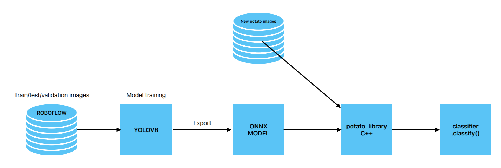

groep: Boris Pouw, Wessel van Gils, Joep Donkers, Caelan van Eijnsbergen
duratie: 27 november - 22 januari
Probleemstelling
Het bedrijf wil graag automatisch defecten kunnen herkennen in
aardappelen. Er kan namenlijk veel mis zijn met een aardappel. Ze kunnen
aangetast zijn door dieren, blauwe schimmel hebben, inwendig bruin zijn,
beschadigt zijn, groen zijn, hol zijn of gewoon rot. Al deze defecten
maken een aardappel niet gepast om naar de supermarkt te gaan. Naast dat
het er voor zorgt dat een aardappel niets opleverd is het ook fijn voor
de boer om te weten wat er mis is met zijn of haar oogst. Het herkennen
van deze defecten is daarom ook erg van belang en dit kan gedaan worden
door middel van computer visie. Het bedrijf wil dan ook dat er een AI
model ontwikkeld word om deze defecten te herkennen.
Onze oplossing

Het bedrijf wil graag automatisch defecten kunnen herkennen in
aardappelen. Er kan namenlijk veel mis zijn met een aardappel. Ze kunnen
aangetast zijn door dieren, blauwe schimmel hebben, inwendig bruin zijn,
beschadigt zijn, groen zijn, hol zijn of gewoon rot. Al deze defecten
maken een aardappel niet gepast om naar de supermarkt te gaan. Naast dat
het er voor zorgt dat een aardappel niets opleverd is het ook fijn voor
de boer om te weten wat er mis is met zijn of haar oogst. Het herkennen
van deze defecten is daarom ook erg van belang en dit kan gedaan worden
door middel van computer visie. Het bedrijf wil dan ook dat er een AI
model ontwikkeld word om deze defecten te herkennen.
Resultaat
99%
nauwkeurig op het onderscheiden van gezonde en ongezonde aardappels
88%
nauwkeurig op het onderscheiden van de onderliggende gebreken; rot, blauw, hol, groen, inwendig bruin, rooibeschadiging, dierlijk.